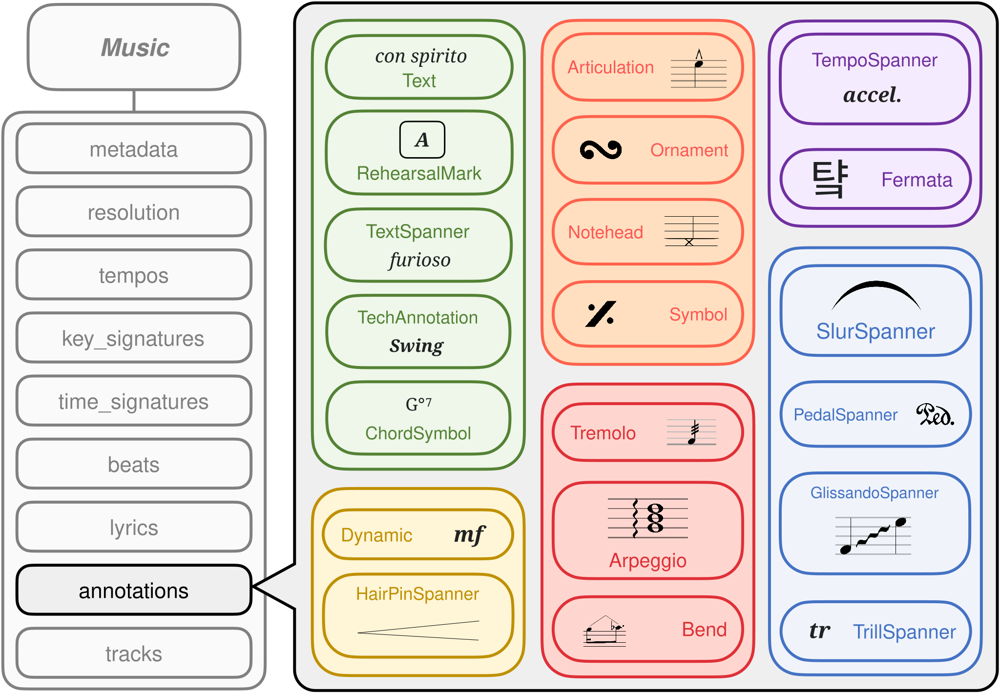

Annotations
MusPy provides several annotation classes for representing performance directives (also known as expression markings) in symbolic music. Here is an illustration of the different annotations that MusPy supports.

These annotation classes are meant to be stored within the annotation attribute of a muspy.Annotation object.
Because muspy.Annotation objects store the onset time of an annotation within the time attribute, none of these annotation classes contain a time attribute themselves (to avoid storing redundant information).
Implementing New Annotations
To implement a new annotation class in MusPy, please inherit from the muspy.Base class (or any of the provided annotation classes).
Please set the following class variables properly:
_attributes: An OrderedDict with attribute names as keys and their types as values._optional_attributes: A list of optional attribute names._list_attributes: A list of attributes that are lists.